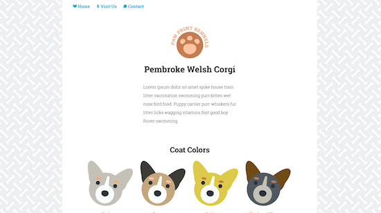
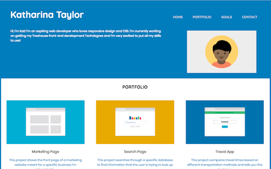
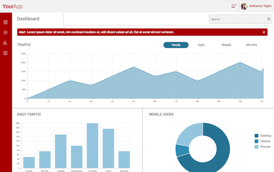
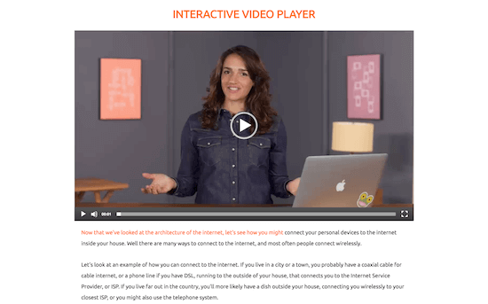
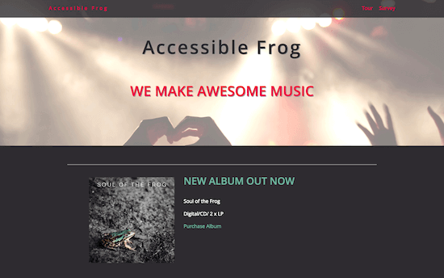

Make the web a more beautiful place.
About Me
Hello! My name is Kat Taylor, and I'm a front-end developer currently living in Berlin, Germany. I strive to create websites that are functional and user-friendly, responsive and beautiful. Although I'm still new in the field, my determination and passion for programming have helped me come a long way: from knowing nothing about programming to being an independently educated web developer in under 6 months!
My Skills
Every day I try to be a better developer than the day before. I'm always looking to improve and expand my knowledge, and I'm very excited about taking on new challenges or learning new programming languages. Below I have listed some of the skills I have accumulated so far.
- HTML
- CSS
- JavaScript
- jQuery
- Sass
- Responsive Design
- SVG graphics
My Work
Check out some of my latest projects. Click the 'Show more' button for a description of the project. For a closer look, click the 'Website' or 'Source Code' buttons.
-

-

In this project I used HTML, CSS and responsive design to create a mobile-first web page with a layout that adjusts to fit mobile phones, tablets and desktop displays. I then refactored the CSS stylesheet to Sass by identifying repeating patterns, using variables and adding mixins.
HTML / CSS / Sass / Responsive Design
-

In this project I built an interactive dashboard for a web application using advanced web techniques including SVG graphics and JavaScript programming. The project involved creating tables, charts, graphics and other user interface components in a manner that promotes interactivity and usability.
HTML / CSS / JavaScript / Sass / Responsive Design
-
-

-

Contact
If you would like to get in touch with me or have any questions, don't hesitate to contact me! You can reach me via phone, email or simply send me a message on Twitter.
If you would like to see more of my work, visit my GitHub account.